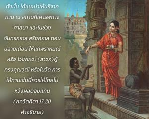
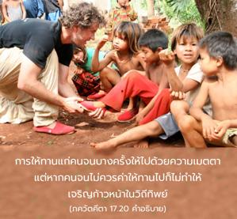
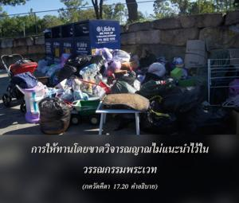

การให้ทานที่ทำไปตามหน้าที่โดยไม่หวังผลตอบแทน ถูกกาลเทศะ และให้แก่บุคคลผู้ควรค่า พิจารณาว่าอยู่ในระดับความดี



ในวรรณกรรมพระเวทแนะนำให้บริจาคทานแก่บุคคลที่ปฏิบัติกิจกรรมทิพย์ ไม่แนะนำให้บริจาคทานโดยขาดวิจารณญาณ ความสมบูรณ์ในวิถีทิพย์ต้องใช้วิจารณญาณเสมอ ดังนั้นได้แนะนำให้บริจาคทาน ณ สถานที่เคารพทางศาสนา และในช่วงจันทรคราส สุริยคราสตอนปลายเดือน ให้แก่ พฺราหฺมณ (พราหมณ์) หรือ ไวษฺณว (สาวก) ผู้ทรงคุณวุฒิ หรือในวัด การให้ทานเช่นนี้ควรให้โดยไม่หวังผลตอบแทน การให้ทานแก่คนจนบางครั้งให้ไปด้วยความเมตตา แต่หากคนจนไม่ควรค่าให้ทานไปก็ไม่ทำให้เจริญก้าวหน้าในวิถีทิพย์ อีกนัยหนึ่งการให้ทานโดยขาดวิจารณญาณไม่แนะนำไว้ในวรรณกรรมพระเวท